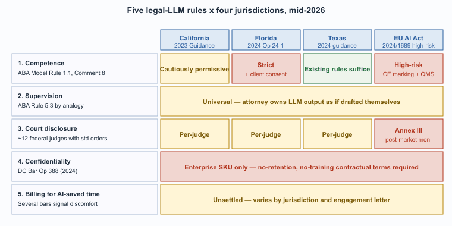

"ABA Model Rule 1.1 says competence. In 2026 that includes knowing what your LLM cannot do, and saying so out loud."
Compass, Compliance-Reader AI Agent
By the end of 2026, the major bars and judiciaries have converged on five rules governing LLM use in legal practice. They differ in detail across jurisdictions; the principles are stable. Every legal LLM deployment must satisfy them or document the residual risk explicitly. The rules below are not a comprehensive compliance manual; they are the small set of principles whose violation generates predictable disciplinary exposure. For the broader regulatory landscape (EU AI Act, state-level AI bills, GDPR overlay) see Section 53.2.

Prerequisites
This section assumes the legal-LLM failure modes from Section 67.2, the regulatory-framework vocabulary from Section 53.1, and a passing familiarity with the EU AI Act risk tiers.
The Five Principles That Have Stabilized
Comment 8 to ABA Model Rule 1.1, the "technological competence" amendment, was originally drafted in 2012 to require attorneys to understand email and basic e-discovery. As of 2026 it has been quietly stretched to cover LLMs without modification; the comment's authors did not anticipate that 14 years later it would become the ethical anchor for generative-AI legal practice across more than 40 U.S. jurisdictions.
- Duty of competence includes technological competence. Comment 8 to ABA Model Rule 1.1 has been amended in most U.S. jurisdictions to require attorneys to understand the technology they use, including LLMs. The practical implication: an attorney cannot delegate verification to an LLM and then disclaim responsibility on the ground of not understanding the tool. The Florida Bar's 2024 Ethics Opinion 24-1 and the California State Bar's 2023 Practical Guidance for the Use of Generative AI both make this duty operationally explicit.
- Duty of supervision applies to LLM-generated work product. An attorney who uses an LLM to draft a brief is responsible for the contents as if they had written it themselves. ABA Rule 5.3 (supervision of non-attorney assistants) extends by analogy: the LLM is not an attorney, the attorney must supervise its output, and the obligation cannot be transferred to the vendor.
- Disclosure obligations are evolving. Multiple federal judges have local rules requiring disclosure of LLM use in filings; check the standing orders before relying on undisclosed LLM assistance. As of mid-2026 the federal district courts are split: roughly a dozen judges have specific disclosure orders, the rest treat LLM use as covered by existing Rule 11 obligations. The U.S. Court of Appeals for the Fifth Circuit briefly proposed a circuit-wide disclosure rule in 2023 and withdrew it after public comment.
- Confidentiality limits cloud LLM use. Many jurisdictions consider the use of consumer-grade LLMs (free ChatGPT, default Gemini) for client matters a violation of the duty of confidentiality unless the provider's data-handling terms clearly prohibit retention and training on submitted content. The fix is enterprise SKUs with explicit no-retention, no-training contractual terms. The DC Bar's 2024 Ethics Opinion 388 is the most-cited articulation of this principle.
- Billing for LLM-augmented work is unsettled. Whether you can bill for the time you saved by using an LLM, and whether you must disclose efficiency gains to clients, varies by jurisdiction. Several state bars have signaled discomfort with billing the previous hourly rate for work the LLM substantially performed; the rule has not consolidated.
The EU AI Act for Legal-Decision Systems
The EU AI Act (Regulation 2024/1689) treats AI systems used in "the administration of justice and democratic processes" as high-risk under Annex III, point 8. The classification triggers conformity-assessment obligations, post-market monitoring, and human oversight requirements before the system can be placed on the EU market or put into service. The practical implication for legal-technology vendors selling into Europe: every Harvey-class product needs a CE marking, a registered importer, and a documented quality-management system. The conformity assessment is a non-trivial engineering project (typically 9 to 18 months for a new vendor), which is why most U.S. legal-LLM vendors entered the EU market later than they entered the U.K. or commonwealth markets.
State-Level Variation
U.S. state bars have moved at very different speeds. New York and California issued ethics opinions in 2023 to 2024 that read as cautiously permissive: LLMs may be used as research and drafting assistants subject to the duties above. Florida's 2024 opinion was sharper, requiring informed client consent for some uses. Texas, by contrast, signaled in 2024 that LLM use is presumptively allowed and the existing rules are sufficient. Practitioners who work across state lines must check the local rule; deployment teams must build a configuration that supports per-jurisdiction policy enforcement.
The rule that is hardest to comply with is also the easiest to ignore: ongoing technological competence. Every other rule above is enforceable through paperwork (a BAA, a disclosure note, a fee letter). The competence rule asks attorneys to actually understand the technology they use, which they often do not. The patterns that comply in practice are continuing-legal-education credit for LLM training, internal champions who maintain the firm's competence baseline, and vendor-provided onboarding that goes beyond "click here to summarize." Firms that treat competence as a one-time training event watch the rule decay over staff turnover; firms that treat it as a recurring obligation maintain it.
Disclosure to Clients
The trend across major firms is toward explicit disclosure of material LLM use in client engagements, often via an updated engagement letter that explains how the firm uses AI, what data flows to which providers, and what the client's rights are. The disclosure language is converging on a common pattern: "Our firm uses generative AI tools to enhance the efficiency of legal work. These tools are operated under enterprise agreements that prohibit the provider from retaining or training on your information. All work product is reviewed by a licensed attorney before delivery. You may request that we not use these tools on your matter; please notify us in writing." The exact wording varies; the shape is stable.
Several large law firms have been criticized in 2024-2025 for vague boilerplate disclosure that gestured at AI use without specifying what tools or what risks. The trend among state bars is toward requiring more specificity: which categories of work involve AI, which providers, and whether the client can opt out. The boilerplate-disclosure approach is unlikely to satisfy the next iteration of the disclosure rules; build the engagement letter for the more specific disclosure that is coming, not the vague disclosure that is currently surviving.
What's Next?
Section 67.4: Verified-RAG Architecture for Legal turns to the architectural pattern that has consolidated as the de-facto standard for legal LLM deployment: verified RAG with explicit citation resolution. The bar rules above tell you what you must do; the architecture below tells you how to do it.